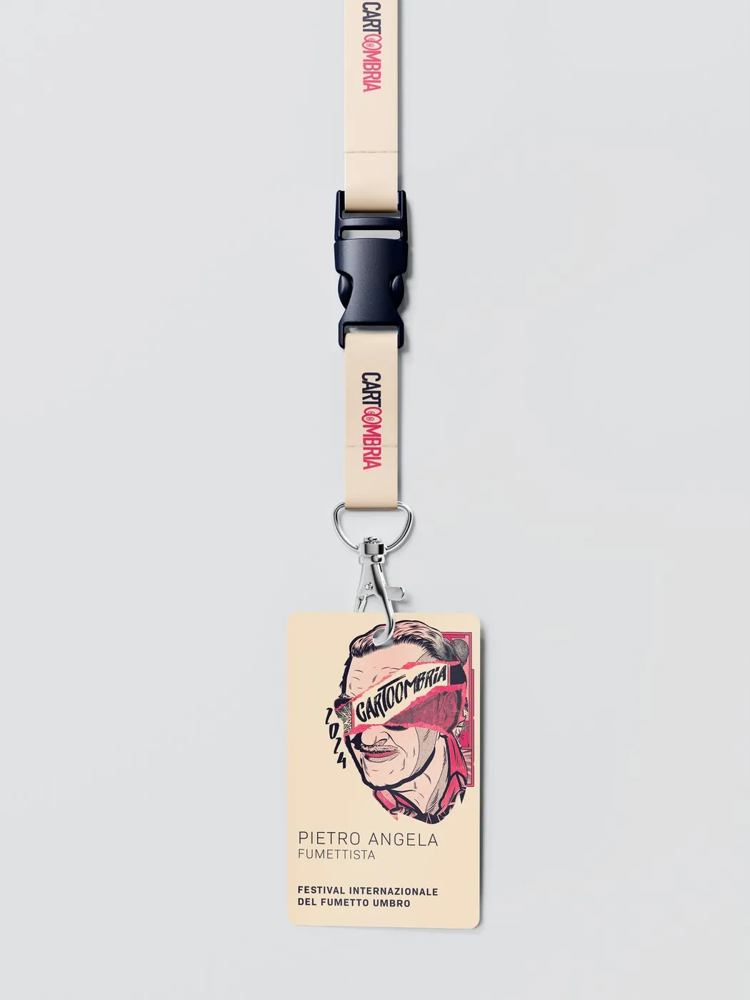
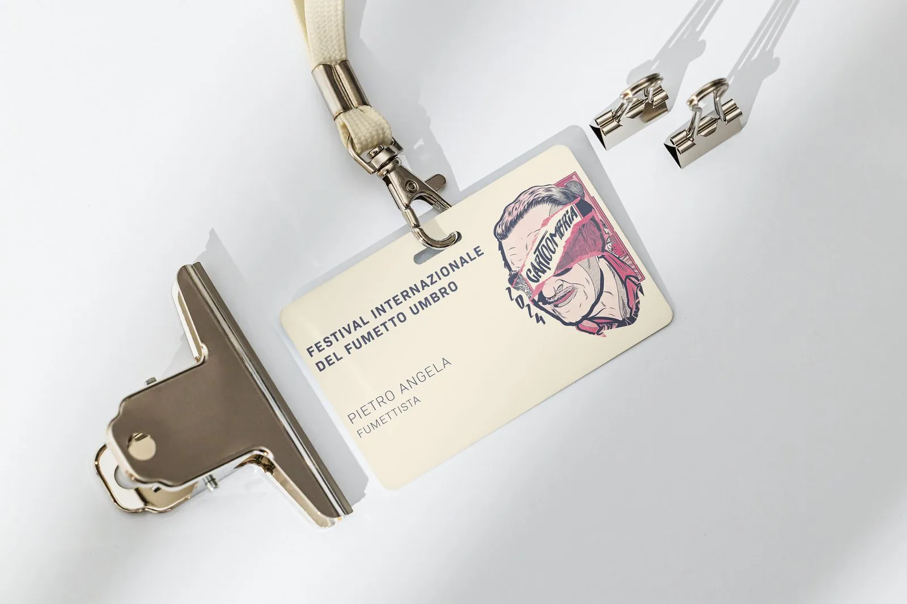

Identità visiva · festival del fumetto, Perugia
Cartoombria
L'identità per il primo festival internazionale del fumetto umbro: un volto illustrato come simbolo, poi stand, badge, post Instagram e merchandising.

Il volto
Il simbolo è un volto illustrato: porta il festival dai post allo stand e lo rende riconoscibile a colpo d'occhio.


Badge e pass
Laccetto, badge e tesserino per ospiti e staff.


Ti serve un'identità per un evento?